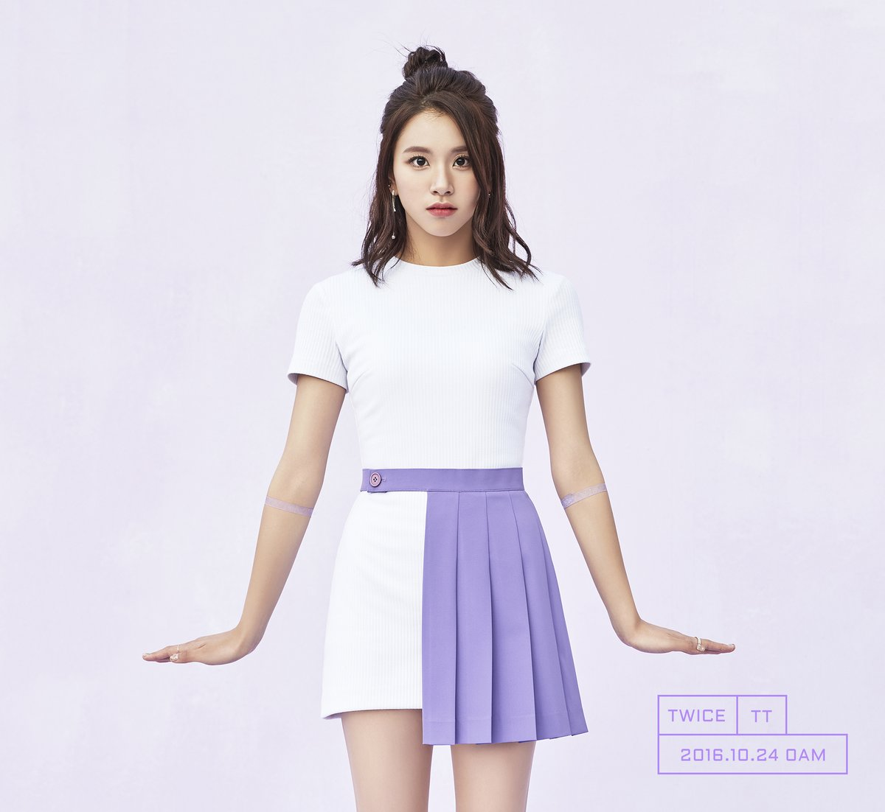

채영
채영은 JYP엔터테인먼트에서 2015년 10월 20일 데뷔한 9인조 다국적 걸그룹 TWICE의 멤버다.
캐치프레이즈는 꼬맹이 래퍼이며, 메인 래퍼를 담당하고 있다. 무대에선 스웩넘치는 멋진 모습을 하고 있지만, 무대밖에선 명랑한 막내이고 발랄하면서도 성숙해보이는 예쁜 트와이스의 래퍼이다.
SIXTEEN에서는 유일한 전문 래퍼였으며, 데뷔 이후엔 팀 내 메인 래퍼를 맡고 있다.
SIXTEEN 때부터 두각을 드러낸 정확한 딕션 덕분에 앞으로의 발전이 기대되는 멤버. 다만 TWICE의 현재까지의 노래가 그렇게 랩의 비중이 크지 않아 비중이 아쉽다는 의견도 있다.
그러나 TWICE TV episode 3 에서 말하길 처음부터 랩을 했던 것은 아니라고 한다. JYP에 들어오고 난 후에 월말평가 그룹 미션 때 랩을 하게 된 이후로 자기한테 더 맞는것 같아 계속하게 되었다고 한다.